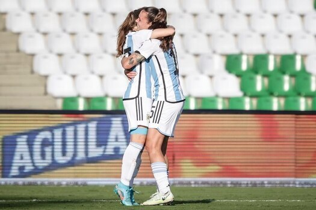
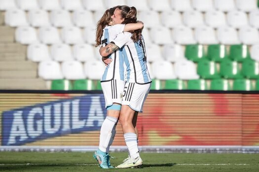

Selección femenina de fútbol argentino
La Selección femenina de fútbol de Argentina es el equipo representativo del país en las competencias internacionales de fútbol femenino. Su organización está a cargo de la Asociación del Fútbol Argentino (AFA), miembro de la Conmebol.
Antes de 1991 existieron los primeros mundiales femeninos (no oficiales). La Selección Femenina de Fútbol de Argentina fue recordada por su participación en el segundo Mundial, que se celebró en México en 1971, donde el 21 de agosto venció 4 a 1 a Inglaterra en el Estadio Azteca ante 110.000 personas.6 El 21 de agosto se propuso como fecha para festejar en Argentina el día de la futbolista en recordatorio del plantel que jugó ese partido.7 Los cuatro goles fueron convertidos por Elba Selva.
El 26 de noviembre de 2006, se consagró por primera vez campeón del Sudamericano Femenino derrotando a Brasil por 2-0, de esta manera destrona al conjunto Verdeamarelo que había sido la única ganadora de los campeonatos disputados desde la creación de la competencia. Este título conseguido es el más importante de la historia del seleccionado; además, es el único combinado además de Brasil que logró salir campeón al menos una vez de la Copa América. También es el conjunto que más subcampeonatos logró, en tres ocasiones (1995, 1998 y 2003).


 
